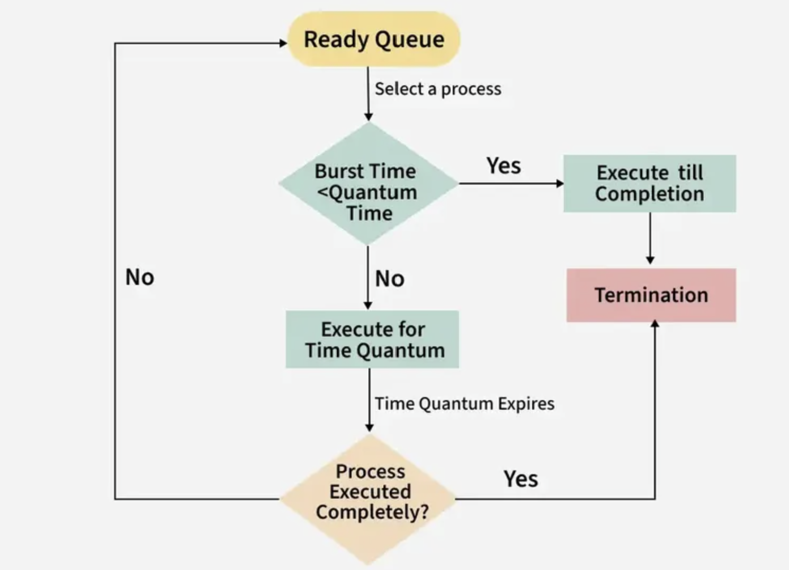
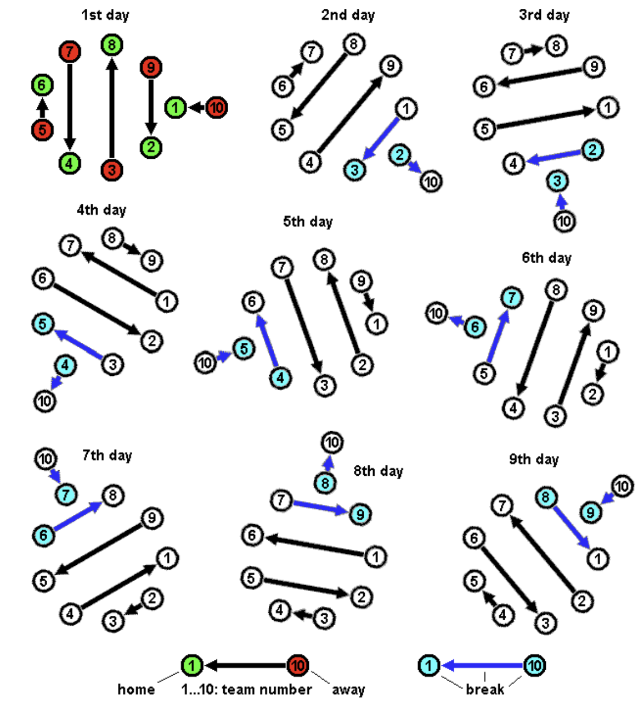

Algoritmo apropiativo que utilizan los sistemas operativos para gestionar el tiempo de ejecución de múltiples procesos que compiten por la atención de la CPU. Se denomina "Round Robin" porque el sistema rota entre todos los procesos, asignando a cada uno un intervalo de tiempo fijo o "quantum", independientemente de su prioridad.
De forma similar, con el algoritmo Round Robin, la CPU dedica un tiempo predeterminado (quantum) a cada proceso. Si el proceso no termina durante su turno, se mueve al final de la cola y la CPU atiende al siguiente proceso, repitiendo el ciclo hasta que todos los procesos hayan terminado.
Imagina que en una oficina, varios empleados envían trabajos a una sola impresora. La impresora imprime solo una página de cada trabajo por turno y luego pasa al siguiente. Si un trabajo no termina, vuelve al final de la cola. Así, todos los trabajos avanzan por partes de forma justa.
| Característica | Round Robin (RR) | First Come First Served (FCFS) | Shortest Job First (SJF) | Asignación por Prioridad | Shortest Remaining Time First (SRTF) |
|---|---|---|---|---|---|
| Tipo | No expropiativo y expropiativo | No expropiativo | No expropiativo | Depende de la implementación | Expropiativo |
| Criterio de planificación | Quantum fijo para cada proceso | Orden de llegada | Duración estimada más corta | Prioridad asignada | Tiempo restante más corto |
| Ventajas principales | Justo para todos, evita inanición | Simple y justo en llegada | Minimiza tiempo de espera | Diferencia procesos importantes | Minimiza espera, es expropiativo |
| Desventajas principales | Depende del quantum, puede tener overhead | Procesos largos bloquean cortos | Puede causar inanición | Inanición por baja prioridad | Overhead y posibles inaniciones |
| Uso típico | Sistemas interactivos | Sistemas batch | Con duración conocida | Con prioridades asignadas | Tiempo real preemptivo |
| Complejidad de implementación | Media | Muy baja | Media | Media a alta | Alta |
| Problemas comunes | Quantum mal elegido, overhead | Procesos largos bloquean otros | Inanición de procesos largos | Inanición por prioridad baja | Frecuente cambio de contexto |